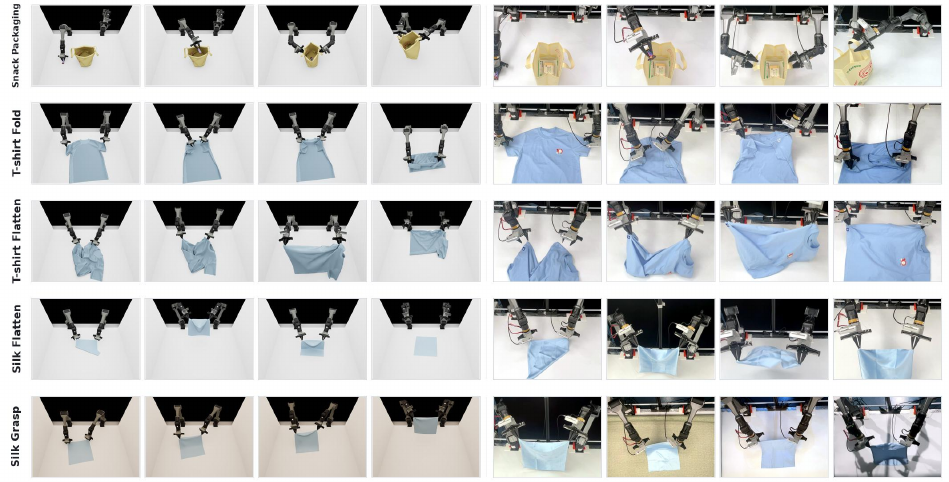
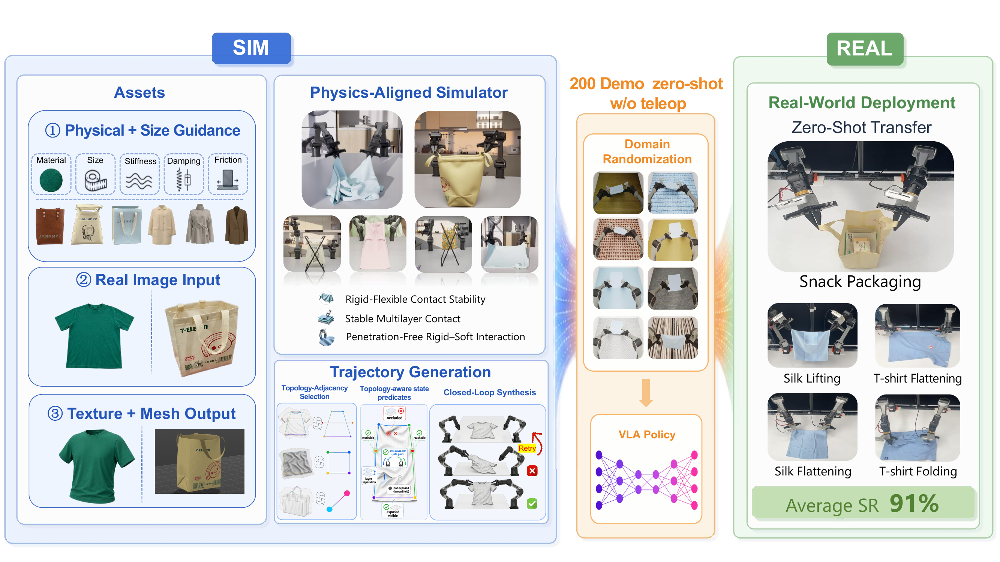
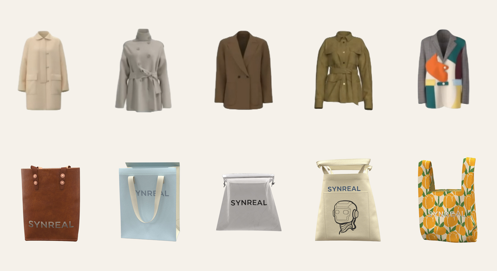
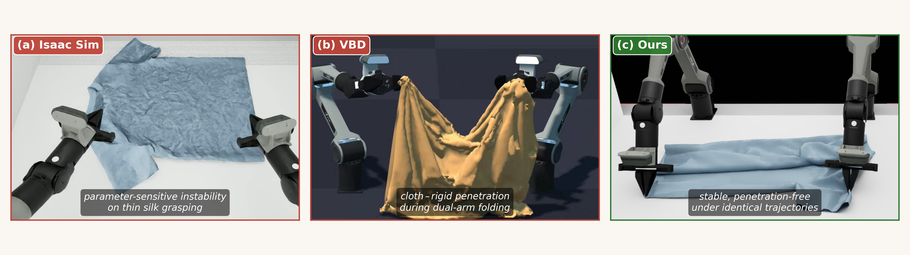
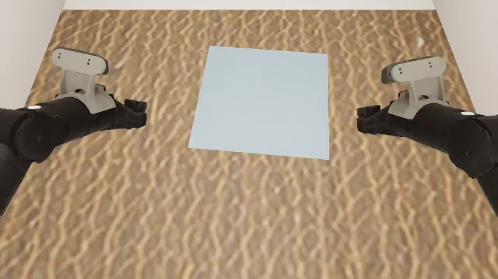
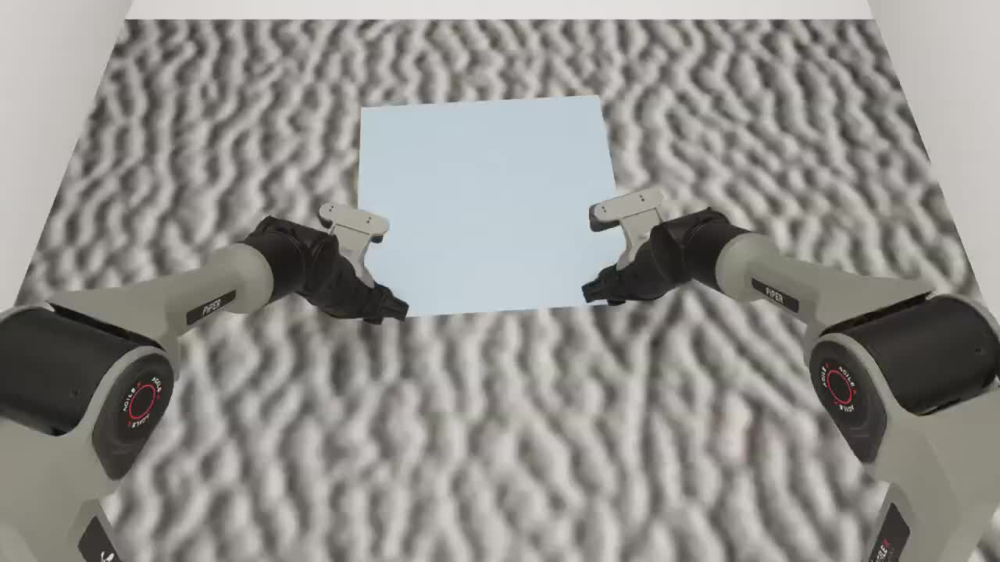
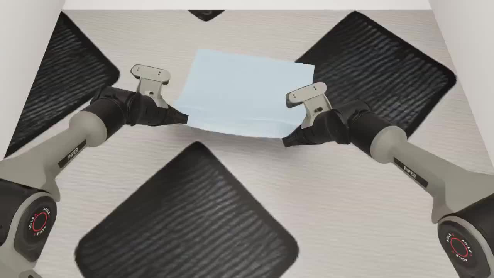
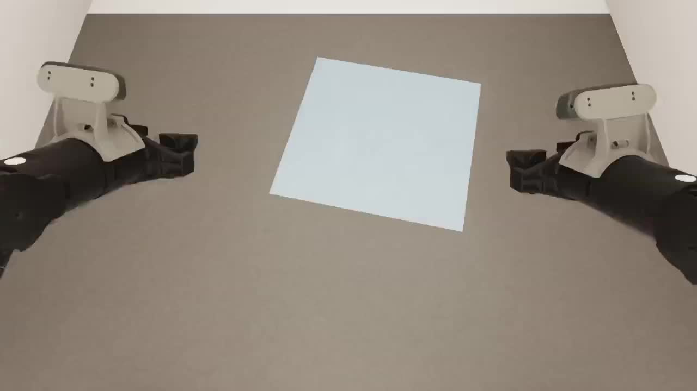

200 simulated demonstrations per task · no teleoperation · 91.30% real-world success across 5 deformable tasks.
No teleoperation at any stage. Single-seed deterministic synthesis.
Across 5 deformable tasks. n=23 consecutive trials per task; Wilson 95% CI [84.7, 95.2].
Texture / lighting / rotation OOD. Real-data baseline drops to 13.0% / 69.6% / 8.7%.
2824 trajectories per day on a single 8×RTX 4090 server — two orders of magnitude cheaper than real-robot collection.
Cloth–rigid contact on thin fabrics breaks across Isaac Sim and VBD — parameter-sensitive instability, penetration, and non-deterministic replay.
MimicGen-lineage methods assume object-centric rigid-frame correspondence. Deformables have neither; concurrent generation pipelines plateau at 17–29% sim-only success.
The field has systematically migrated to depth / point-cloud, leaving dark, low-texture, and reflective fabrics unsupported.
Left: the policy’s actual training observation (front oblique camera). Right: real-world execution with no fine-tuning. Per-task success rates from n=23 consecutive trials.

SAME POLICY CHECKPOINT · SIM ROLLOUT KEYFRAMES VS. ZERO-SHOT REAL DEPLOYMENT

Assets feed the simulator; SimWeaver-Syn produces 200 deterministic demonstrations per task from a single seed; domain randomization renders varied scenes; the demonstrations train a $\pi_{0.5}$ VLA policy deployed zero-shot on real hardware.
Extensible asset framework supporting arbitrary mesh import and single-image asset generation, covering garments and bags.

Robust collision handling, penetration prevention, and trajectory-replay determinism — addressing contact-reliability failures of widely-used solvers on thin fabrics.
| Simulator | Task ↑ | Pen. ↓ | ms ↓ |
|---|---|---|---|
| Isaac Sim | 0.0% | 0.0% | 7.80 |
| Newton VBD | 0.0% | 77.5% | 10.38 |
| SimWeaver | 100.0% | 0.0% | 4.44 |

FAILURE-MODE COMPARISON UNDER IDENTICAL TRAJECTORIES
Topology-aware trajectory synthesis. Generates high-quality, deterministic demonstrations from a single seed — no learned generative models, no teleoperation, no post-hoc filtering.
| Method | Pass ↑ | Replay 100× ↑ |
|---|---|---|
| SIM1 | 24.0% | 13 / 100 |
| SimWeaver-Syn | 97.2% | 100 / 100 |
Trains a $\pi_{0.5}$ VLA policy directly transferable to real hardware via three randomization axes: initial-state diversity, deformable-aware image augmentation, and scene-level domain randomization over lighting, background, and texture.




Each episode samples a fresh starting configuration — draping, rotation, and folding state varied per seed.
Photometric and geometric augmentation tailored to cloth visual states — color shift, blur, and crop applied post-render.
Sobol quasi-random sampling over lighting, table material, and cloth color — rendered live from static_cam.
Hardware: bimanual Piper 6-DOF arms with parallel-jaw grippers · 1 overhead + 2 wrist-mounted RealSense D435i cameras. Same policy checkpoint deploys zero-shot across all five tasks.
The real-data baseline (100 demos) collapses under modest distribution shifts. SimWeaver (200 sim demos + DR) maintains 100% across all three axes. All gaps significant under single-tail Fisher (α=0.05).
Real-data training overfits to the visual conditions of the demonstration distribution. Sim training with deformable-aware DR generalizes.
At small data scales, the sim-trained policy already outperforms real-data training in-distribution — reaching 100% at n=200.
A DP3 baseline trained on the same 200 demonstrations fails to deploy: consumer RGBD sensors drop coverage on matte-black grippers, dark silk, and reflective plastic-bag surfaces. SimWeaver’s RGB formulation succeeds where geometric pipelines silently lose data.
Additional renderings of scenes and asset variants.
@misc{simweaver2026,
title = {SimWeaver: Zero-Shot RGB Sim-to-Real for Deformable Manipulation},
author = {Anonymous},
year = {2026},
note = {Anonymous submission under review}
}